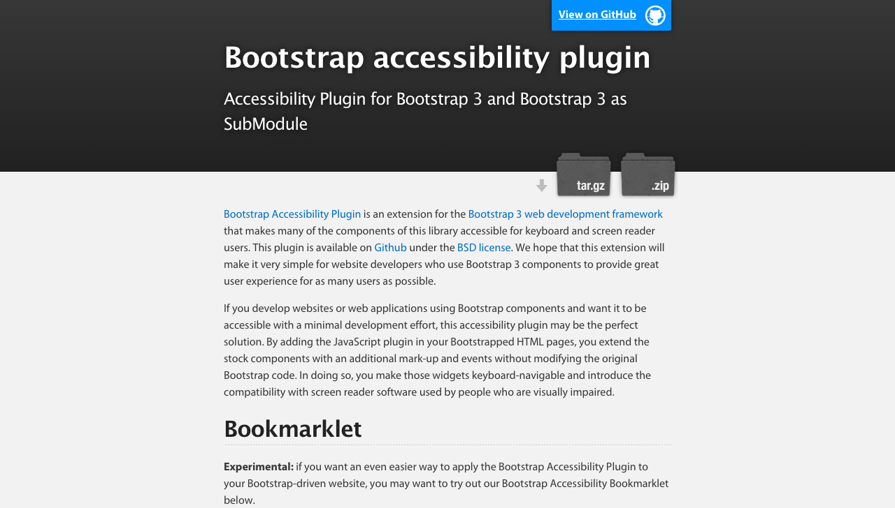

Build Your Own
B
ootstrap
Axa Liauw & Kevin Reiss
“Sleek, intuitive, and powerful mobile first front-end framework for faster and easier web development.”
- Bootstrap
 wow
so framework
very speed
much grid
such rwd
wow
so framework
very speed
much grid
such rwd
But, TBH, Bootstrap kind of sucks...
 Bootstrap <div>itis or <div>abetes
Bootstrap <div>itis or <div>abetes


First Problem:
Usability Study: Why do all your sites look totally
different?
Wall of Shame


Second Problem
Those websites run on numerous different platform
Some open, some closed, some you can decorate a bit.
Third Problem
University is strongly/mandating that all the aformentioned sites comply with WCAG Guidelines.
Libraries and Collections
-
Main Catalog | …
(609) 258-5455
piaprlib@princeton.edu
We need HTML and CSS to be decoupled
Modularity, FTW
// Import external libraries.
@import "compass";
@import "breakpoint";
@import "singularitygs";
@import "toolkit";
@import "vendor/bourbon/bourbon";
@import "vendor/base/base";
@import "variables/**/*";
@import "abstractions/**/*";
@import "base/**/*";
@import "components/branding";
@import "components/header";
@import "components/footer";
@import "components/menus/menu--main";
@import "components/search/search--header";
I pitty the fool
who doesn't get  y!
y!

Modular Components / Partials
Preventing Deviations
Selector Inheritance
Reusable Code
Our Toolbox
Bourbon Family
Singularity
.pul_base_four_four_four_stacked-region--first {
@include grid-span(4,1);
clear: both;
margin-left: 0;
margin-right: 2.5%;
}
.pul_base_four_four_four_stacked-region--second {
@include grid-span(4,5);
margin: 0 2.5%;
}
.pul_base_four_four_four_stacked-region--third {
@include grid-span(4,9);
margin-left: 2.5%;
margin-right: 0;
}
Breakpoint
Build Tools
Where we're at. What we've been doing.
CSS Stats
wow
such speed
grids much
limitless
very artisinal
so semantic
QUESTIONS?
If we don't have time, ttyl.